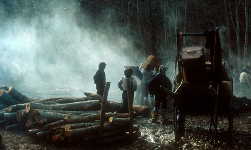

TERREFÈTE
Des vacances vertes et pas chères dans un cadre authentique.
Des vacances vertes et pas chères dans un cadre authentique.
Niché au coeur de la vallée de la Bellongue, entre forêts et rivières, Terrefète brille de son calme et de l'atmosphère paisible qui y règne.
Ce petit hameau surplombant Augirein – le village en contrebas, est fait d'une dizaine d'habitations et c'est ici, bercée par les bruits environnants de la nature, que se dresse la maison.
Elle est entourée d'un jardin entièrement clôturé qui s'étale sur environ 700 m². Balançoire pour les plus jeunes, terrasse en bois couverte, salon de jardin, barbecue, tout est en place pour profiter au mieux de l'espace extérieur.
Vous trouverez sur place jeux de société, livres divers, matériel de puériculture, et bien-sûr, calme et tranquillité.
Vos animaux de compagnie sont les bienvenus.
Terrefète est situé au sein du Parc naturel régional, créé en 2009 sur 141 communes des Pyrénées Ariégeoises, pour la richesse et la diversité de leurs patrimoines naturels, culturels et humains.
Le Parc impulse ou mène des actions dans des domaines aussi divers que la protection de la faune et de la flore, la restauration du patrimoine bâti, la préservation des paysages, la promotion des économies d'énergie et des énergies renouvelables, le management environnemental, l'éducation au territoire, la valorisation de la forêt et du bois, la promotion des savoir-faire et produits locaux, le tourisme durable, ...
Randonnées moyenne ou haute montagne, circuits VTT, cyclotourisme (circuits des cyclosportives Fabio Casartelli, l'Ariégeoise, la ronde de l'Isard... et de la grande boucle), tennis, équitation, spéléologie, parapente, pêche en lac de montagne ou en rivière, fêtes locales et folkloriques, gastronomie.
L'Aran ou le val d'Aran est la vallée voisine du Parc naturel régional des Pyrénées Ariégeoises. C'est une vallée de langue occitane située en Espagne. La Garonne y a sa source avant de se prolonger en France par le Comminges.
À découvrir : randonnées, rafting, monuments historiques, équitation, sports d'hiver, et bien plus encore.
Ski de descente, ski nordique, raquettes, luges, randonnées aux flambeaux, ... Plus d'informations sur les sites des stations à proximité de la maison :
Le Mourtis — à 40min en voiture
Guzet Neige — à 1h en voiture
Peyragudes — à 1h15 en voiture
Les Pyrénées ariégeoises sont au coeur de nombreuses et magnifiques randonnées, promenades et balades à faire seul ou en groupe.
Quelques exemples testés et approuvés :
Balade de deux à trois heures au sein de la vallée de la Bellongue à la découverte de villages authentiques. Bâtisses historiques, forêts, rivières, vues somptueuses sur plusieurs montagnes.
Traverser Terrefète et à droite de l'église descendre vers un petit ruisseau "le Nédé" que l'on traverse sur une passerelle, puis remonter en lisière des bois, pour arriver au moulin d'Orgibet.
Monter au village d'Orgibet ; à l'église, prendre le chemin qui conduit à Saint-Jean-Du-Castillonnais en passant par près et bosquets. Saint-Jean-Du-Castillonnais doit son nom aux hospitaliers chevaliers de Saint-Jean (1312). Admirer l'Église Saint-Quentin construite sous les Templiers ; traverser la route pour emprunter le chemin du lieu-dit "le Château".
Là, possibilité de redescendre directement sur Augirein en prenant le sentier du "Chemin de Saint-Jacques de Compostelle". Autrement, monter jusqu'au village de Galey où l'on peut admirer le bâti, façades en pierre noires, vieille fontaine, four à pain.
À la sortie de Galey, en suivant le chemin de procession jusqu'à l'église du Calvaire, vue sur le Maubermé 2880m, le Mont Valier 2838m et le Pic du Moussau 1614m. Coin idéal pour une pause ou un pique-nique.
Redescendre sur Orchein à travers champs et bosquets et rejoindre Augirein.
Traverser le village et rejoindre Terrefète. Arrivée.
Promenade sur une demi-journée
La cascade de Nerech, située sur le chemin du Valier, est une belle randonnée de quelques heures à travers forêts et rivières. Facile, elle est l'occasion rêvée d'une excursion en famille.
Depuis le parking, emprunter le parcours aménagé qui mène jusqu'à la maison du Valier puis suivre le GR transfrontalier.
Traverser le Ribérot au niveau d'une passerelle pour passer sur la rive droite et monter à travers une forêt de hêtres.
Le sentier passe près de la cabane de Nerech puis sort de la forêt vers 1350m au niveau de la remarquable cascade de Nerech que l'on rejoint après 1h30 de marche.
Après avoir profité de la vue et de la fraîcheur de la cascade, le retour se fait par le même itinéraire.
Montagne emblématique du Couserans, le Mont Valier est aussi un beau sommet jouissant d'un somptueux panorama.
Idéalement situé, le refuge des Estagnous permettra de se reposer à mi-parcours en savourant un coucher de soleil souvent exceptionnel.
Le lendemain, si le temps le permet, le retour en boucle par les Lauzets est l'occasion de découvrir un versant magnifique et sauvage.
Itinéraire long, réalisable en une journée, bien qu'il soit préférable de le répartir sur deux jours, avec nuit en bivouac ou au refuge des Estagnous.
Au fond du parking, suivre la route jusqu'à la maison du Valier. Poursuivre sur la piste bien balisée, en direction du refuge des Estagnous / Mont Valier.
Traverser sur la passerelle au pied de la cascade, et s'élever en lacet sur un passage rocheux. Poursuivre sans difficulté jusqu'à la cabane des Caussis.
Peu après la cabane, laisser le sentier de gauche montant directement au refuge, et suivre celui de droite signalé par un panneau "Etang Rond" (balisage jaune).
À l'approche de l'étang une main courante aide à franchir un passage rocheux un peu aérien.
Joli étang avec des plages rocheuses propices à la baignade.
Longer brièvement l'étang par la gauche, puis s'élever vers l'est sur un sentier bien tracé. Vers 2020m le sentier s'oriente à gauche (NE) en traversée.
Vers 2200m, on accède enfin à une zone plus plane. A l'est, le Mont Valier domine. Laisser à notre droite les étangs des Estagnous et s'élever jusqu'au refuge.
Suivre à droite (E) le chemin du Valier. Il contourne par la droite l'arête ouest du Valier, puis s'élève rudement jusqu'au col Faustin. Des mains courantes aident à franchir les passages les plus délicats.
S'élever à gauche (NE) sur des pentes faciles jusqu'au sommet du Valier.
Croix sommitale en fer forgé inaugurée en 2012, en remplacement de la croix de marbre détruite en 2011.
Revenir prudemment par le même itinéraire jusqu'au refuge.
S'élever au nord sur le sentier du col de Pécouch (balisage jaune). Pentes un peu plus rudes à l'approche du col.
Laisser le chemin de la Liberté qui descend à gauche en direction de l'étang du Milouga.
Partir à droite, en traversée vers l'est, sans pratiquement perdre d'altitude. Tenter de repérer les cairns qui, au bout d'une demi-heure de traversée, nous guident dans une descente plein nord vers l'étang du Cruzous. Il est important de ne pas descendre trop tôt ni trop tard sur les barres rocheuses.
Passer le déversoir et descendre vers l'ouest en suivant le balisage jaune.
Au bout de quelques minutes, abandonner le sentier de la cabane des Espugues, et descendre au mieux à gauche sur des pentes faciles en direction de l'étang d'Arauech (O-NO). On rejoint l'étang au niveau de sa pointe nord.
Ne pas tenter de rejoindre directement l'étang du Milouga, mais s'élever au nord au-dessus d'un barre rocheuse. Une sente cairnée nous guide pour franchir un passage rocheux un peu délicat.
Suivre les cairns jusqu'au déversoir de l'étang.
Sans franchir le déversoir, suivre une sente balisée en jaune qui reste pratiquement à niveau jusqu'à la cabane du Taus.
Cabane ouverte, trois places, bon état. Eau à proximité, cheminée, pas de bois.
Poursuivre toujours à peu prés à niveau sur un sentier tranquille jusqu'au cap des Lauses.
Descendre à gauche (O), en lacet sur le GR10 (balisage rouge et blanc).
Suivre le GR qui nous ramène sans soucis, sur un joli sentier, jusqu'au ruisseau du Ribérot. Franchir la passerelle et poursuivre à droite (NO) sur le chemin de l'aller pour rejoindre en quelques minutes la maison du Valier, puis le parking.
Arrivée.
Ou rendez-vous sur rando-marche.fr pour consulter toutes les randonnées du secteur.
La guerre des Demoiselles est une rébellion ayant lieu en Ariège de 1829 à 1832, et se prolongeant de façon moins intense jusqu'en 1872. Elle est une réaction au Code forestier de 1827. C'est le mouvement de contestation le plus connu parmi ceux qui se développent dans les Pyrénées au XIXe siècle.
Elle doit son nom au fait que les paysans apparaissent déguisés en femmes, avec de longues chemises blanches ou des peaux de moutons, des foulards ou des perruques, le visage noirci ou caché pour attaquer — essentiellement la nuit — les grands propriétaires, les gardes forestiers et gendarmes, les maîtres de forges et les charbonniers.
En 1829, alors que la population de l'Ariège ne cesse d'augmenter et que les paysans s'appauvrissent, le Roi Charles X décide de reprendre aux communes le sol domanial en instaurant une nouvelle administration forestière.
Ce nouveau code impose « une nouvelle réglementation de l'usage des forêts, en particulier concernant le ramassage du bois, les coupes et surtout le pâturage désormais mis en défens (interdit), le droit de marronnage, et les droits de chasse, de pêche et de cueillette ».
Il s'agit surtout d'une volonté d'intensifier le charbonnage afin d'alimenter principalement l'industrie.
Or depuis le Moyen Âge, le Couserans et les hautes vallées de l'Ariège, reculés, vivent en quasi autarcie. La forêt assure la survie de la population qui la considère comme sienne.
Les paysans des vallées de la Bellongue, de Bethmale, du Biros mais aussi de Massat, s'insurgent et « les Demoiselles » entrent ainsi en scène.
Les résistances apparaissent pour la première fois au cours d'une opération de saisie, dans la forêt de Saint-Lary, entre le 25 et le 30 mai 1829. Vingt gardes forestiers, ayant surpris six bergers en délit avec leurs troupeaux, veulent s'emparer des bêtes ; mais ils se retrouvent très rapidement face à une centaine de paysans déguisés et armés qui les insultent, leur jettent des pierres et tirent même des coups de fusil. Effrayés et impuissants, les gardes se retirent.
Au mois de juillet 1829, les incidents de ce genre se multiplient et des renforts de gendarmerie — quatre brigades, deux compagnies de ligne sillonnent le Castillonnais et la Bellongue ; deux compagnies surveillent le Saint-Gironnais — n'empêchent pas l'insurrection de s'étendre. Les révoltés ont recours à des tactiques de guérilla consistant à éviter l'affrontement direct avec la troupe et à privilégier les escarmouches avec les gardes forestiers.
À la mi-août 1829, une nouvelle tentative de saisie de bétail en Bellongue, près du petit village de Buzan, provoque l'un des plus vifs affrontements de l'année. Le 16 de ce mois, un inspecteur, deux géomètres et plusieurs gardes et agents forestiers, venus marquer la coupe usagère dans la forêt de Buzan, découvrent deux troupeaux de moutons en délit. Leurs bergers ayant refusé de décliner leur identité, ils sont ligotés dans l'attente d'être envoyés en prison. Aussitôt, plusieurs habitants du village et communes voisines, qui étaient présents au moment de l'altercation, manifestent hautement leur mécontentement. Le tocsin retentit, ameutant les populations alentour. Une armée furieuse de « Demoiselles », munie de bâtons, de faux et de fusils, intervient et libère les prisonniers. Lorsque quelques jours après les gendarmes se présentent pour arrêter les deux bergers, un nouvel attroupement des plus menaçants se forme.
Le 17 décembre 1829, les gardes de la vallée d'Autrech, sur la commune de Saint-Lary, décident de cesser tout service après avoir été menacés par quinze Demoiselles armées de haches. Le 21 janvier 1830, un garde de la famille Lafont de Sentenac est blessé à la tête par un coup de hache et les menaces contre les gardes forestiers augmentent en intensité.
Dans la nuit du 10 au 11 mai, une centaine de Demoiselles attaquent à coups de fusil la maison d'un garde à Saleich, à dix kilomètres au sud de Salies-du-Salat, dans la Haute-Garonne. Le garde riposte et blesse à mort un jeune assaillant de vingt ans.
Ces actions simples et directes, menées contre tous ceux qui entravent la libre utilisation des forêts, sont très rapidement populaires, et le mouvement ne tarde pas à s'étendre dans les régions voisines du département de l'Ariège.
Confortée par les succès de ces premières actions de guérilla, la révolte se propage dans la vallée d'Arbas, en Haute-Garonne, et à la haute Ariège, dans le canton des Cabannes et dans la région d'Ax. À partir de janvier 1830, une bonne partie du département de l'Ariège est en effervescence, et les Demoiselles effectuent plusieurs démonstrations de force. Le 24 janvier, à Balaguères (Castillonnais), le jour de la fête locale, elles défilent dans les rues armées de haches et de fusils, au son d'un hautbois et d'un tambour. Trois jours plus tard, 400 à 500 Demoiselles défilent à Massat en criant : « À bas les gardes forestiers ! » Le 17 février, elles sont à peu près le double et le maire réussit à éviter l'affrontement de justesse.
De telles manifestations montrent le soutien dont bénéficient les Demoiselles auprès des populations et des autorités locales, comme les maires. Les renforts de troupe envoyés sur place se révèlent inopérants, car les actions de guérilla des révoltés sont sporadiques et se développent sur des territoires de montagne très accidentés et mal connus. En 1829 et 1830, les hautes autorités ne s'alarment guère de cette révolte, car les revendications des Demoiselles contre l'administration forestière ne paraissent pas exorbitantes.
À partir de l'été 1830, les actions se font plus violentes et s'étendent à toute l'Ariège. Elles sont dirigées notamment contre les maîtres de forges.
Le 27 septembre, une commission départementale des forêts est mise en place. Les troubles cessent. Ils reprennent en novembre, jusqu'à mars 1831.
Moins importants, les troubles se manifestent néanmoins de façon sporadique dans les années qui suivent, jusqu'en 1872.
Cette peur, ces actions violentes inciteront le pouvoir à instaurer des mesures d'amnistie et assouplir les lois de cette administration forestière.
Au total, cette révolte ne fit que deux morts en 43 ans. Un garde forestier du côté du « parti de l'ordre », et un paysan du côté des « Demoiselles ».
« Une maison propre, charmante et accueillante. Un village et des habitants simples, tolérants, gentils, solidaires. »
« Nous avons passé un séjour très agréable et 100% reposant. Le confort est au rendez-vous, et les enfants ne sont pas oubliés avec les jeux et caisses de jouets. »
Envie d'air frais ? Réservez sur Abritel.fr


{kind=link}
{kind=link}
{kind=link}
{kind=link}
{kind=link}
{kind=link}
{kind=link}
{kind=link}